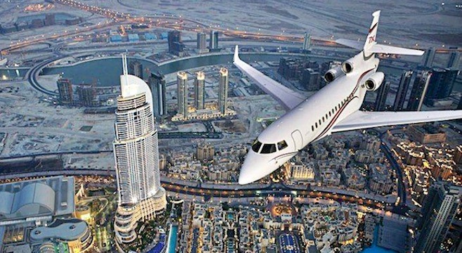

Turismo
El turismo ha jugado un papel crucial en la diversificación de la economía del emirato,144 que también se ha visto favorecido por su ubicación geográfica en Medio Oriente como «entrada natural para los mercados turísticos emergentes». Su consolidación como uno de los principales destinos turísticos resultó de «las condiciones políticas, económicas y socioculturales prevalecientes» en los EAU.145 Desde 1997 la actividad turística es regulada por el Departamento de Mercadotecnia Comercial y Turística del emirato.144 Los planes estratégicos del emirato, que han garantizado la inversión en varias obras de infraestructura como el hotel Burj Al Arab en 1999 y otros complejos turísticos, han sido imitados desde entonces en los demás emiratos de la federación.146
La expectativa del gobierno en el sector turístico consiste en mantener un incremento del 7 a 8 % anual en el número de turistas a Dubái.147 En 2012, el emirato rebasó por primera los diez millones de visitantes148 y para 2015 esa cifra se incrementó a 14,2 millones,147 aunque se espera que con la Expo 2020 atraiga a varios más.145 La mayor parte provienen de India, Arabia Saudita, Reino Unido, Omán y Estados Unidos.149
Una de las principales actividades turísticas en Dubái es el comercio, razón por la cual es considerada como «la capital de las compras de Oriente Medio».17 145 Lo anterior se debe también a las diversas zonas libres que existen en el emirato y a las políticas fiscales vigentes que facilitan la adquisición inclusive de productos lujosos a precios accesibles.150 Destacan por ejemplo los distintos zocos al aire libre; el Dubai Mall, el centro comercial más grande del mundo; y el Dubai Shopping Festival realizado anualmente.